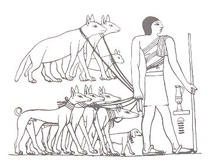

Genetic evidence
The domestic dog is the first species, and the only large carnivore, to have been domesticated. The first dogs were certainly wolflike, but the phenotypic changes that coincided with the dog–wolf genetic divergence are not known.[13] Dogs are the most variable mammal on earth with around 450 globally recognized dog breeds.[1] In the Victorian era, directed human selection developed the modern dog breeds, which resulted in a vast range of phenotypes.[13] Most breeds were derived from small numbers of founders within the last 200 years,[13][1] and since then dogs have undergone rapid phenotypic change and were formed into today's modern breeds due to artificial selection imposed by humans. These breeds can vary in size and weight from a 0.46 kg (1.0 lb) teacup poodle to a 90 kg (200 lb) giant mastiff. The skull, body, and limb proportions vary significantly between breeds, with dogs displaying more phenotypic diversity than can be found within the entire order of carnivores. These breeds possess distinct traits related to morphology, which include body size, skull shape, tail phenotype, fur type and colour.[13]
The difference in size has been attributed to a lncRNA variant in the IGF1 region arisen in wolves from northern latitudes ~53.000 years ago and fixed by natural and subsequently by human selection.[14] Their behavioral traits include guarding, herding, and hunting,[13] retrieving, and scent detection. Their personality traits include hypersocial behavior, boldness, and aggression,[1] which demonstrates the functional and behavioral diversity of dogs.[13] As a result, today dogs are the most abundant carnivore species and are dispersed around the world.[1] The most striking example of this dispersal is that of the numerous modern breeds of European lineage during the Victorian era.[15]
A genetic study identified 51 regions of the dog genome which were associated with phenotype variation among breeds in the 57 traits studied, which included body, cranial, dental, and long bone shape and size. There were 3 quantitative trait loci that explained most of the phenotype variation. Indicators of recent selection were shown by many of the 51 genomic regions that were associated with traits that define a breed, which include body size, coat characteristics, and ear floppiness.[16]

Photo by
Tesem
on
Wikipedia
Ancient dog breeds
"Ancient breed" is a term formerly, but no longer, used for a particular group of dog breeds by the American Kennel Club.[11][18] These breeds were referred to as "ancient", as opposed to modern, breeds because historically it was believed their origins dated back more than 500 years.
In 2004, a study looked at the microsatellites of 414 purebred dogs representing 85 breeds. The study found that dog breeds were so genetically distinct that 99% of individual dogs could be correctly assigned to their breed based on their genotype, indicating that breeding barriers (pure-bred breeding) have led to distinct genetic units. The study identified 9 breeds that could be represented on the branches of a phylogenetic tree which grouped together with strong statistical support and could be separated from the other breeds with a modern European origin. These 9 breeds had been referred to as "ancient breeds". The study found that the Pharaoh Hound and Ibizan Hound were not as old as once believed; rather, they had been recreated from combinations of other breeds, and that the Norwegian Elkhound grouped with the other European dogs despite reports of direct Scandinavian origins dating back 5,000 years.[17]
Dog types
Further information: Dog type
Dog types are broad categories of dogs based on form, function or style of work, lineage, or appearance. In contrast, modern dog breeds are particular breed standards, sharing a common set of heritable characteristics, determined by the kennel club that recognizes the breed.
The spread of modern dog breeds has been difficult to resolve because many are the product of the controlled breeding practices of the Victorian era (1830–1900).[10][11] In 2010, a study looked at 48,000 single nucleotide polymorphisms that gave a genome-wide coverage of 912 dogs representing 85 breeds.[19]
The study found distinct genetic clusters within modern dogs that largely corresponded to phenotype or function. These included spitz-breeds, toy dogs, spaniels, Mastiff-like breeds, small terriers, retrievers, herding dogs, scent-hounds, and sight-hounds. There were 17 breeds that conflicted with phenotype or function and these were thought to be the result of crossing some of the other phenotypes. As in a 2004 study that found 9 ‘ancient breeds’ to be genetically divergent, the study found 13 breeds that were genetically divergent from the modern breeds: the Basenji, Saluki, Afghan hound, Samoyed, Canaan dog, New Guinea singing dog, dingo, Chow Chow, Chinese Shar Pei, Akita, Alaskan malamute, Siberian husky and American Eskimo dog.[19]
The study found that there were three well-supported groups that were highly divergent and distinct from modern domestic dogs.
an Asian group (Dingo, New Guinea singing dog, chow chow, Akita and Shar Pei)
a Middle Eastern group (Afghan hound and Saluki)
a northern group (Alaskan Malamute and Siberian Husky).[19]
Basal breeds
A study in 2012 examined 49,000 single nucleotide polymorphisms that gave a genome-wide coverage of 1,375 dogs representing 35 breeds, 19 wolves, and previous published genetic signatures of other breeds, giving a total of 121 breeds covered. The study found a deep genetic split between old-world and new-world wolves, and confirmed the genetic divergence of 13 breeds from a 2010 study (Afghan Hound, Akita, Alaskan Malamute, American Eskimo, Basenji, Canaan dog, Chow Chow, Dingo, New Guinea singing dog, Saluki, Samoyed, Shar-Pei, Siberian Husky), plus another three: the Eurasier, Finnish Spitz and Shiba Inu. The study referred to these 16 as basal breeds, as opposed to ancient breeds, as they exhibited genetic divergence but not all of them were historically considered to be "ancient breeds".[20]
The 2012 study found that modern breeds only emerged in the 19th century and that claims of their antiquity are based on little or no historical or empirical evidence. The study indicated that throughout history, global dog populations experienced numerous episodes of diversification and homogenization, with each round further reducing the power of genetic data derived from modern breeds to help infer their early history.[20]
Of the basal breeds, the American Eskimo Dog and Eurasier were the very recent product of cross-breeding other basal breeds. Most basal breeds have hybridized with other lineages in the past. If those other lineages were other basal breeds then a basal genetic signature remains. The combination of introgression and past population bottlenecks suggested that basal breeds have little or no genetic connections to their ancestral populations and that their genetic distinctiveness does not signify ancient heritage. They are distinctive from the modern breeds because the genetic heritage of the modern breeds has become blurred due to admixture, and the basal breeds have mostly avoided admixture with them due to geographic or cultural barriers.[20]
Photo By
Phylogenetic tree of ancient dog breeds
on
Wikipedia
Medical research
As dogs are a subspecies but their breeds are distinct genetic units, and because only certain breeds share the same type of cancers as humans, the differences in the genes of different breeds may be useful in human medical research.[21]
Breed temperament
In 2014, a study indicated that some breed-temperaments, such as anxiety or fear, may be linked to gene mutations. Other temperaments may be due to the legacies of 'ancient' ancestry.[22]
Breeds
Main article: List of dog breeds
Further information: Dog breeding

Photo By
on
Wikipedia
Kennel clubs
Groups of owners that have dogs of the same breed and have an interest in dog breeding can form national Kennel clubs. Kennel Clubs maintain breed standards, record pedigrees in a breed registry (or studbook), and issue the rules for conformation dog shows and trials and accreditation of judges. They often serve as registries, which are lists of adult purebred dogs and lists of litters of puppies born to purebred parents.
A dog breed is represented by a sufficient number of individuals to stably transfer its specific characteristics over generations. Dogs of same breed have similar characteristics of appearance and behavior, primarily because they come from a select set of ancestors who had the same characteristics.[23] Dogs of a specific breed breed true, producing young that are very similar to their parents. An individual dog is identified as a member of a breed through proof of ancestry, using genetic analysis or written records of ancestry. Without such proof, identification of a specific breed is not reliable.[24] Such records, called stud books, may be maintained by individuals, clubs, or other organizations.
Kennel clubs provide the recognition of distinct dog breeds, but there are many independent clubs with differing, and sometimes inconsistent standards and they need not apply scientific standards. Four varieties of the Belgian Shepherd Dog are recognised as four distinct breeds by the New Zealand Kennel Club.[25] Further, some groups of dogs which clearly share a persistent set of characteristics and documented descent from a known foundation stock may still not be recognized by some clubs as breeds. For instance, the feist is a hunting dog raised in the Southern United States for hunting small game. Feists have a consistent set of characteristics that reliably differentiate them from other dog types and breeds. However, the United Kennel Club recognizes one breed of feist, the Treeing Feist, while the American Kennel Club does not recognize any feist breed.
A dog is said to be purebred if their parents were purebred and if the dog meets the standards of the breed. Purebred dog breeders of today "have inherited a breeding paradigm that is, at the very least, a bit anachronistic in light of modern genetic knowledge, and that first arose out of a pretty blatant misinterpretation of Darwin and an enthusiasm for social theories that have long been discredited as scientifically insupportable and morally questionable."[26] The American Kennel Club allows mixed-breed dogs to be shown but under the condition the animals have been spayed or neutered, are not a wolf hybrid, and not eligible for the AKC Foundation Stock Service Program or an AKC Purebred Alternative Listing (PAL).[27] California Assembly Act AB 1634 was a bill introduced in 2007 that would require all non-working dogs of mixed breed over the age of 6 months to be neutered or spayed.[28] The bill was morally controversial, leading the American Kennel Club to fight the bill.[29]
The Canadian department of agriculture has strict standards for the documenting of what it calls "evolving breeds".[30]
Breed standards
The breed standard for each breed of dog is a detailed description of the appearance and behaviour of an idealized dog of that breed.[31] Included in the breed standard description are externally observable aspects of appearance and behaviour that are considered by the breed club to be the most important for the breed, and externally observable details of appearance or temperament that are considered by the breed club to be unacceptable (called faults). In addition, most breed standards include a historical section, describing the place of origin and the original work done by the breed or its ancestor types.
Major registries
Dogs with a breed standard may be accepted into one or more of the major registries (kennel clubs) of dog breeds, including The Kennel Club (1873, UK), American Kennel Club (1884), New Zealand Kennel Club (1886), Canadian Kennel Club (1888), United Kennel Club (1898), United Kennel Clubs International (UCI, Germany 1976), Australian National Kennel Council (1958), and other national breed registries. Recognized dog breeds are classified by groups, such as Hound, Terrier, Working, Herding, Sporting, Non-Sporting, Toy and Miscellaneous; some groups may be further subdivided by some registries.[32]
Fédération Cynologique Internationale (FCI) is neither a breed registry nor does it issue pedigrees or keep addresses for breeders.[33] It is a global canine organization with member and contract partners (one member per country) that conduct international conformation shows, working/hunting/herding trials, and various other events. The results are submitted to FCI for processing, approval and international recognition. Each of the member and contract partners issue and maintain their own pedigrees and respective breed standards, and train their own judges. FCI ensures that each member mutually recognizes the pedigrees and judges of all FCI members.[34]
Health issues
Purebred dogs have more health problems than mongrel dogs, and require more veterinary visits,[35] and tend to have lower longevity.[36][37] Indeed, studies have reported lifespans that are shorter by between one and almost two years.[38][39] Notably, dog breeds with flat faces and short noses have breathing difficulties,[40] eye trouble and other health issues.[41]
List of pure breeds
Refer: List of dog breeds
The Fédération Cynologique Internationale is a global organisation with 98 members and contract partners (one member per country) that recognize 354 purebreds.[34]
Crossed-breeds
Main article: Dog crossbreed
See also: List of dog crossbreeds
A dog crossbreed is the result of mating two different breeds.[42] "Designer Dog" became a fad in the late 20th century.[43][44]
Mixed-breeds
Main article: Mongrel
A mongrel, mixed-breed dog or mutt is a dog that does not belong to one officially recognized breed but can be a mix of two breeds and is not the result of intentional breeding.[45]
Natural breeds
e further: Landraces
Natural breeds rose through time in response to a particular environment and in isolation from other populations of the species.[46] This environment included humans but with little or no selective breeding by humans.[47]